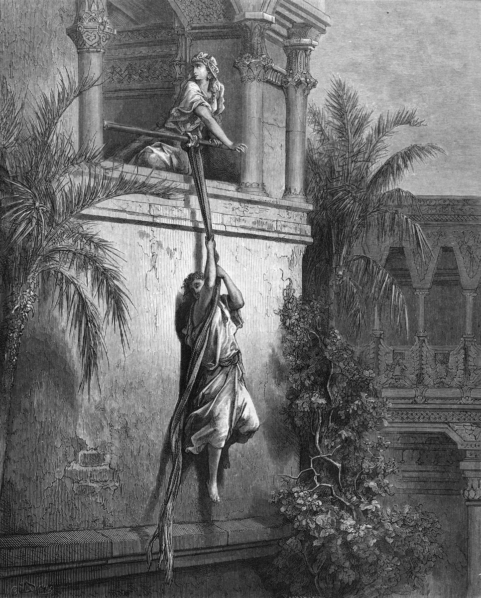

1 Samuel 19 — The Mister Translation

1 Samuel 19:12: “And Michal let David down through the window; and he went, and fled, and escaped.” Doré gives Michal a rope of twisted cloth, as Joshua 2:15 gave Rahab a rope and Josephus gives Michal “a cord”; the Hebrew of this verse names none. She looks back toward the room, where Saul’s messengers will find the teraphim in the bed.
.jpg){kind=link}
![Medieval manuscript page with four painted scenes under arcades on gold and coloured grounds. Top left: a crowned king on a throne points at two young men, one kneeling with his hands raised. Top right: knights in mail on horseback charge with swords and lances over fallen bodies. Bottom left: the enthroned king thrusts a long spear at a kneeling young man holding a harp, who raises his hand. Bottom right: the king points toward a group of soldiers in mail with axes and spears. Latin captions sit above and below the pictures, and later captions in Persian and Hebrew script run down the margins.](img/art/morgan-bible-saul-spear-messengers.jpg)
Four moments of 1 Samuel 19:4–11 in order: Jonathan speaks good of David to Saul and brings him back (verses 4–7); David defeats the Philistines with a great slaughter (verse 8); Saul, with the evil spirit on him, thrusts the spear at David as he plays (verses 9–10); and the king sends men to David’s house to kill him (verse 11). The Latin caption under the spear says the king wanted to pin him with it, “but David escaped again”.

Translator's Notes — verse by verse
Put to death. “And Saul spoke to Jonathan his son and to all his servants about putting David to death”: le-hamit, the causative of mut, to die. Some form of “put to death” comes eight times in this chapter, in seven verses, from Saul’s order here to Michal’s answer in verse 17, and every attempt fails. In 18:25 (already on these pages) Saul only planned for David to fall by the hand of the Philistines; now he says it aloud, and to David’s friend. The ASV has “that they should slay David”; the NWT 1984 “of putting David to death”; the NIV “Saul told his son Jonathan and all the attendants to kill David.”
Delighted. “But Jonathan, Saul’s son, delighted greatly in David”: chafets be-David, the verb of 18:22 (already on these pages), where Saul had his servants tell David “the king delights in you” to draw him into the trap of the bride-price. The father’s delight was a lie; the son’s is not (chaphets). Versions divide the verses here differently: the KJV and the NWT 1984, with the Greek, begin verse 2 with this sentence, while the Hebrew, the ASV and the Douay end verse 1 with it. The ASV has “But Jonathan, Saul’s son, delighted much in David”; the Douay “But Jonathan the son of Saul loved David exceedingly”; the Geneva “but Jonathan Saul’s son had a great favor to David”.
A hidden place, and the field. “Be on your guard in the morning, and stay in a hidden place and hide yourself”: ba-seter, in the hiding-place (seter). “And I will go out and stand beside my father in the field where you are”: Jonathan’s plan puts David within earshot; in the next chapter there is a field and a hiding place again, and the signal is arrows (20:19–22 and 35–40, now on these pages). “And I will see what there is, and I will tell you”: ve-ra’iti mah, literally “and I will see what”. The KJV has “take heed to thyself until the morning”, the Geneva “unto the morning”, where the Hebrew has ba-boqer, in the morning; the ASV has “and if I see aught, I will tell thee”; the NWT 1984 “I shall certainly see what will happen”.
Sin. “And Jonathan spoke good of David to Saul his father”: the plea turns on the verb chata, to sin, three times in two verses: “Let not the king sin against his servant … for he has not sinned against you … Why then would you sin against innocent blood”. Jonathan does not argue that David is in danger but that his father is about to do wrong. “And his deeds have been very good for you”: ma’asav tov-lekha me’od. The ASV has “because his works have been to thee-ward very good”; the NIV “Let not the king do wrong to his servant David”; the Douay “Sin not, O king, against thy servant, David”.
His life in his palm. “For he put his life in his palm and struck down the Philistine”: va-yasem et-nafsho ve-khappo, the words Jephthah used of himself, “I put my life in my palm” (Judges 12:3, already on these pages). The psalmist says “My life is in my palm continually” (Psalm 119:109, already on these pages), and the woman at En-dor will say it of herself to Saul (28:21, now on these pages). Everywhere else the speaker says it of his or her own life; here alone it is said of another man, by the friend who watched him do it. The ASV has “for he put his life in his hand”; the NWT 1984 “put his soul in his palm”; the Geneva “For he did put his life in danger”; the NIV “He took his life in his hands when he killed the Philistine.”
A great salvation. “And Jehovah worked a great salvation for all Israel”: teshu’ah gedolah (teshu’ah). The phrase stands in four verses of the Hebrew Bible: here, and three times of the victories of David’s mighty men (2 Samuel 23:10 and 12, and 1 Chronicles 11:14). With the article, Samson says “this great salvation” of the jawbone (Judges 15:18, already on these pages). It is not the noun of 14:45 (already on these pages), where the people said of Jonathan, “who has worked this great salvation in Israel”, with yeshu’ah; but Jonathan, who was saved that day from his father’s own oath, now uses the same argument for his friend. The KJV has “wrought a great salvation for all Israel”; the ASV “wrought a great victory for all Israel”; the NWT 2013 “brought about a great victory”.
Innocent blood, without cause. “Why then would you sin against innocent blood, by putting David to death without cause?”: dam naqi (naqi), the blood the cities of refuge were set apart to protect, “so that innocent blood is not shed in the midst of your land” (Deuteronomy 19:10, already on these pages). “Without cause” is chinnam, for nothing, gratis (chinnam). The ASV has “to slay David without a cause”; the NWT 1984 “in having David put to death for nothing”; the Douay “by killing David, who is without fault”.
Saul swears again. “And Saul listened to the voice of Jonathan; and Saul swore: As Jehovah lives, he shall not be put to death”: chai-YHWH im-yumat, literally “if he is put to death”, the form of an oath with its curse left unsaid. Saul has sworn by Jehovah’s life about his son before, “even if it is in Jonathan my son, he shall surely die” (14:39, already on these pages), and the people kept him from it. This oath he keeps for three verses: by verse 10 he is throwing the spear again. The ASV has “As Jehovah liveth, he shall not be put to death”; the NIV “Saul listened to Jonathan and took this oath”; the Douay “he was appeased with the words of Jonathan”.
As before. “And Jonathan brought David to Saul, and he was before him as before”: ke-etmol shilshom, literally “as yesterday and the day before”, the Hebrew idiom for how things used to be, as when Laban’s face “was not toward him as before” (Genesis 31:2, already on these pages). Here, as at 14:21 (already on these pages), the word for yesterday is written with an extra aleph. Only the Douay keeps the two days: “as he had been yesterday and the day before”. The ASV has “as beforetime”; the KJV “as in times past”; the NWT 2013 “and he continued to serve him as before”.
War again. “And there was war again”: va-tosef ha-milchamah lihyot, literally “and the war added to be”. “And struck them with a great slaughter”: makkah gedolah, the phrase of Beth-shemesh, where “Jehovah had struck the people with a great slaughter” (6:19, already on these pages). The phrase stands in ten verses of the Hebrew Bible. As in chapter 18, David’s success comes first and Saul’s darkness follows it. The ASV has “And there was war again”; the NWT 1984 “In time war broke out again”; the NIV “He struck them with such force that they fled before him.”
An evil spirit of Jehovah. “And an evil spirit of Jehovah came upon Saul”: ruach YHWH ra’ah. The chapter has a wording of its own: in 16:14 it was “an evil spirit from Jehovah”, and in 16:15–16 and 18:10 “the evil spirit of God” (all already on these pages). “The spirit of Jehovah” with “evil” after it stands in one verse of the Hebrew Bible, this one; everywhere else “the spirit of Jehovah” is the spirit that rushed on David and turned away from Saul (16:13–14). The Greek reads “an evil spirit of God”, and its Saul is “sleeping” in his house, not sitting. In 18:10 the spirit “rushed on” Saul, tsalach; here it simply “came upon” him. The ASV has “And an evil spirit from Jehovah was upon Saul”; the NWT 1984 “And Jehovah’s bad spirit came to be upon Saul”; the NWT 2013 “And a bad spirit from Jehovah came upon Saul”.
The spear again. “And Saul sought to strike David to the wall with the spear”: the words of 18:11 (already on these pages), “I will strike David to the wall”, said there and done here, “and he struck the spear into the wall”. “But he slipped away from before Saul”: va-yiftar, from patar, to get loose. The Greek has none of 18:10–11, so in the Greek this is the first spear Saul throws. The NWT 1984 has “Saul sought to pin David to the wall with the spear”; the ASV “but he slipped away out of Saul’s presence”; the Douay “the spear missed him, and was fastened in the wall”.
That night. “And David fled and escaped that night”: va-yimmalet, from malat, to escape, which comes in five verses of the chapter (10, 11, 12, 17 and 18). The Greek has no “that night” here; it opens verse 11 with “And it came to pass in that night”, so that the messengers are sent the same night. The Hebrew puts the night with the escape, and verse 11 then finds David at home again. The ASV has “and David fled, and escaped that night”; the NWT 2013 “David fled and escaped during that night”; the NIV “That night David made good his escape.”
The house watched. “And Saul sent messengers to David’s house to watch him and to put him to death in the morning”: the heading of Psalm 59 ties that psalm to this night, “when Saul sent, and they watched the house to kill him” (Psalm 59:1). “If you do not save your life tonight”: memallet et-nafshekha, the causative of the same malat, to let your own life escape. “Tomorrow you will be put to death”: mumat, a man as good as dead. The NWT 1984 has “If you are not letting your soul escape tonight”; the NWT 2013 “tomorrow you will be a dead man”; the Douay “Saul therefore sent his guards to David's house”.
Through the window. “And Michal let David down through the window”: va-toreda, she made him go down, the verb and the window of Rahab, who “let them down by a rope through the window” (Joshua 2:15, already on these pages). “Through the window”, be’ad ha-challon, stands in seven verses of the Hebrew Bible. In two someone is let down by it, Rahab’s spies and David; in the other five someone looks out: Abimelech at Isaac and Rebekah (Genesis 26:8), Sisera’s mother (Judges 5:28, both already on these pages), Jezebel (2 Kings 9:30), and Michal herself, who will look out at David dancing before the ark and despise him in her heart (2 Samuel 6:16, told again at 1 Chronicles 15:29; none of these translated here yet). Here she saves him by it. Paul was let down the same way, “through a window, in a basket” (2 Corinthians 11:33; Acts 9:25, both already on these pages). Rahab had a rope; the Hebrew gives Michal none, though Josephus does: “she let him down by a cord out of the window” (Antiquities 6.11.4, Whiston’s English). The ASV has “So Michal let David down through the window”; the NIV “So Michal let David down through a window, and he fled and escaped”; the TLB “So she helped him get down to the ground through a window.”
The teraphim. “And Michal took the teraphim and put it in the bed” (teraphim): the household images Rachel stole from her father and sat on in the camel’s saddle while he searched for them (Genesis 31:19 and 31:34–35, already on these pages). Again a daughter deceives her father with teraphim, and again the man who searches does not find what he came for. Rachel’s were small enough to hide under her; Michal’s, under a garment, can pass for a sleeping man. The word is plural in form, but “at its head”, mera’ashotav, treats it as one figure. The word stands in fifteen verses of the Hebrew Bible, among them Micah’s shrine (Judges 17:5; 18:14) and Samuel’s verdict on Saul, “presumption is iniquity and teraphim” (15:23, all already on these pages); now the king finds teraphim in his son-in-law’s bed. The KJV has “And Michal took an image, and laid it in the bed”; the NWT 2013 “took the teraphim statue and placed it on the bed”; the NIV “Then Michal took an idol and laid it on the bed”; the TLB “Then she took an idol and put it in his bed”.
A net of goats’ hair. “And put the net of goats’ hair at its head”: kevir ha-’izzim. As a noun, kevir stands in two verses of the Hebrew Bible, verses 13 and 16 of this chapter; the same letters elsewhere spell kabbir, mighty, an unrelated word (kevir). Its sense is guessed from its relatives: mikhbar, the altar’s grating, “a network of bronze” (Exodus 27:4, already on these pages), and the makhber that Hazael dipped in water and spread over his king’s face (2 Kings 8:15): something woven or meshed. Set at the head of the bed, it may stand in for a man’s hair. The ASV has “and put a pillow of goats’ hair at the head thereof”; the NWT 1984 “a net of goats’ hair she put at the place of his head”; the Douay “put a goat's skin with the hair at the head of it”; the Geneva “a pillow stuffed with goat’s hair”.
The Greek’s liver. The Greek has a word of its own for each of the two things. For the teraphim it has kenotaphia, cenotaphs, “empty tombs”, and for kevir it has hēpar, liver: “the liver of the goats”, as if it read kaved, liver, a word with the same first two letters. Josephus follows the liver and drops the idol altogether: Michal “put under the bed-clothes a goat’s liver”, and when the guards came, the leaping of the liver moved the covers and made them believe “that David breathed like one that was asthmatic” (Antiquities 6.11.4, Whiston’s English).
“He is sick.” “And she said: He is sick”: choleh hu. Saul’s answer is to have the sick man carried to him: “Bring him up to me in the bed, to put him to death”. “And Saul sent the messengers to see David”: several versions add “again”, which the Hebrew does not have. “And look — the teraphim in the bed”: ve-hinneh, the messengers’ look, which the narrator shares with the reader. The KJV and the Geneva have “And Saul sent the messengers again to see David”; the ASV “And Saul sent the messengers to see David”; the NIV “Bring him up to me in his bed so that I may kill him.”
Deceived. “Why have you deceived me like this”: rimmitani, from rimmah, to deceive (rimmah). The form “you deceived me” stands in three verses of the Hebrew Bible: Jacob to Laban, the morning after his wedding, “Why then have you deceived me?” (Genesis 29:25, already on these pages); Saul to Michal here; and the woman at En-dor to Saul himself, “Why have you deceived me? You are Saul!” (28:12, now on these pages). Jacob was deceived by a father with a daughter; here a daughter deceives her father, and with teraphim, the gods Rachel took from hers. “And let my enemy go”: oyevi, my enemy, the word of 18:29 (already on these pages), “Saul was David’s enemy all the days”; now Saul says it to David’s wife. The ASV has “Why hast thou deceived me thus, and let mine enemy go”; the NWT 1984 “Why did you trick me like this”; the Geneva “Why hast thou mocked me so”.
A question or a threat. Michal answers: “He said to me, Let me go; why should I put you to death?”: lamah amitekh, a question, with the same “why” that Saul has just used. Several versions make it a threat. The Douay and the Geneva have “Let me go, or else I will kill thee”; the NWT 2013 “Send me away, or I will kill you!”; the TLB “He threatened to kill me if I didn’t help him.” Others keep the question: the ASV and KJV “Let me go; why should I kill thee?”, and the NIV “Let me get away. Why should I kill you?” The threat is in the Greek, ei de mē, “and if not, I will kill you”, and Josephus has Michal plead that David “had threatened to kill her”. Either way it is Michal’s account, given to save herself, and the narrator does not say that David said anything of the kind.
To Samuel at Ramah. “And David fled and escaped, and came to Samuel at Ramah, and told him all that Saul had done to him”: Ramah is Samuel’s home, where “his house was there, and there he judged Israel” (7:17), where he went after he left Saul for the last time (15:34) and again after he anointed David (16:13, all already on these pages). The man who anointed David in secret is the one he runs to. The ASV has “Now David fled, and escaped, and came to Samuel to Ramah”; the NIV “When David had fled and made his escape, he went to Samuel at Ramah”; the TLB “So Samuel took David with him to live at Naioth.”
Naioth. “And he and Samuel went and stayed at Naioth”: the scribes wrote the name נוית in all four of its places in this chapter (verses 18, 19, 22 and 23) and read it Nayot; it comes once more, when David flees from it (20:1, now on these pages). No town of that name is known. “Naioth in Ramah” sounds like a place within Ramah or beside it, and the word is often taken as “dwellings”, from naveh, a pasture or abode: perhaps the prophets’ lodgings rather than a town. Josephus has Samuel leave the city: “he left the city Ramah, and took David with him, to a certain place called Naioth”. The ASV has “And he and Samuel went and dwelt in Naioth”; the Douay “and he and Samuel went and dwelt in Najoth”; the NIV “Then he and Samuel went to Naioth and stayed there.”
The company of the prophets. “And they saw the company of the prophets prophesying”: lahaqat ha-nevi’im (lahaqah). The word stands in one verse of the Hebrew Bible, this one; the group Saul met at Gibeah was a chevel, a band (10:5, 10:10, already on these pages). Its sense comes from the context alone. The Greek has ekklēsia, assembly, the word it uses for qahal; the four letters of lahaqat, put in another order, spell qehillat, “the assembly of”. The verb is singular in the Hebrew, “and he saw”; the versions, with the Greek, make it plural. “And Samuel standing, set over them”: omed nitsav ’aleihem, two verbs of standing, the second the word for one stationed over others. The NWT 1984 has “the elderly ones of the prophets prophesying”; the ASV “and Samuel standing as head over them”; the KJV “and Samuel standing as appointed over them”; the Douay “and Samuel presiding over them”.
They also. “And the spirit of God came upon Saul’s messengers, and they also prophesied”: gam hemmah, “they also”, three times in two verses, and then “he also”, gam hu, four times of Saul in verses 22–24. Saul sends three sets of men, as the king of Israel sends three captains of fifty to Elijah (2 Kings 1:9–13, already on these pages), and in both stories the third time is not like the others: there the third captain kneels; here the king goes himself. The spirit that stops the messengers in their errand is the spirit that came on the seventy elders, when “they prophesied — and did not continue” (Numbers 11:25, already on these pages). The ASV has “And Saul sent messengers again the third time, and they also prophesied”; the NWT 2013 “and they began behaving as prophets as well”; the TLB “The same thing happened a third time!” The Douay ends verse 21 with “And Saul being exceedingly angry,” from the Greek of verse 22.
The great cistern in Secu. “And he also went to Ramah himself, and came to the great cistern that is in Secu”: bor ha-gadol, a cistern cut in the rock to hold rainwater, the word of Joseph’s pit (bor). Secu is named nowhere else, and where it was is not known. The Greek reads the verse another way: “And Saul was angry with wrath, and he too went to Armathaim, and comes as far as the well of the threshing floor that is in Sephi”. Josephus too has Saul angry: “at last he was angry, and went thither in great haste himself”. The ASV has “and came to the great well that is in Secu”; the KJV “came to a great well that is in Sechu”; the NIV “the great cistern at Seku”; the Douay “the great cistern, which is in Socho”.
On the road. “And the spirit of God came upon him also, and he went, going on and prophesying, until he came to Naioth in Ramah”: va-yelekh halokh va-yitnabbe, the doubled verb of going on and on. The spirit takes Saul on the road, before he arrives; Josephus says that “Samuel, before he saw him, made him prophesy also”. At Gibeah the spirit “rushed on him” (10:10, already on these pages); here, as on his messengers, it “came upon” him. The NWT 1984 has “and the spirit of God came to be upon him, yes, him”; the ASV “and he went on, and prophesied, until he came to Naioth in Ramah”; the Geneva “and he went prophesying until he came to Naioth in Ramah”.
Stripped. “And he also stripped off his clothes”: va-yifshat, the verb of 18:4 (already on these pages), where Jonathan stripped off his robe and gave it to David; here the king strips himself. Moses stripped Aaron of his garments on the mountain where he died (Numbers 20:28, already on these pages), and the Philistines will strip Saul’s armour from his body (31:9, now on these pages). “And fell down naked all that day and all that night”: “and fell down naked” stands in one verse of the Hebrew Bible. Readers differ whether ’arom here means wholly naked or only without his outer garments; Micah uses it beside “stripped” of himself in mourning, “I will go stripped and naked” (Micah 1:8, already on these pages). The ASV has “And he also stripped off his clothes”; the NWT 1984 “and he lay fallen naked all that day and all that night”; the NIV “He lay naked all that day and all that night.”
Before Samuel. “And he also prophesied before Samuel”: the Greek has “before them”. 15:35 (already on these pages) said that “Samuel did not see Saul again until the day of his death”; here they are in one place, and Saul lies on the ground before the prophet who no longer comes to him. The two can stand together if “see” there means to go and visit. The Douay has “and prophesied with the rest before Samuel”; the KJV “and prophesied before Samuel in like manner”.
The proverb again. “Therefore they say: Is Saul also among the prophets?”: the question stands in three verses of the Hebrew Bible, 10:11 and 10:12 (already on these pages) and this one, where “prophets” is spelled ba-nevi’im without its second yod. At Gibeah it was said in wonder of a young man newly anointed; here it is said of a king thrown to the ground by the spirit, on his way to kill the man anointed after him. The book gives the proverb two origins; readers differ whether two stories lie behind one saying, or one saying was told of two days. The Douay has “This gave occasion to a proverb”; the NWT 1984 “That is why they came to say”; the TLB “Is Saul a prophet too?”
Patterns worth carrying forward
Where this translation keeps the words exact and distinct: “put to death” for the causative of mut in all eight places; “delighted” for chafets, as in 18:22; “a hidden place” for seter; “sin” for chata all three times in Jonathan’s plea; “put his life in his palm”, as in Judges 12:3; “a great salvation” for teshu’ah gedolah, kept apart from the yeshu’ah of 14:45; “innocent blood” for dam naqi, as in Deuteronomy 19:10; “without cause” for chinnam; “as before”, as in Genesis 31:2 and 14:21; “a great slaughter” for makkah gedolah, as in 6:19; “an evil spirit of Jehovah”, kept apart from the “evil spirit from Jehovah” of 16:14 and the “evil spirit of God” of 16:15 and 18:10; “came upon” for the spirit in verses 9, 20 and 23, kept apart from tsalach, “rushed on”; “strike David to the wall”, as in 18:11; “escaped” for malat in all five verses; “let down through the window”, as in Joshua 2:15; “teraphim”, as in 15:23 and Genesis 31; “net” for kevir; “deceived” for rimmah, as in Genesis 29:25 and Joshua 9:22; “enemy”, as in 18:29; “let go” for shillach in Saul’s question and Michal’s answer alike; “company” for lahaqah, kept apart from the “band” of 10:5; “prophesy” throughout, as in 10:5–13; “they also” and “he also” for gam; “cistern” for bor; and “stripped off” for pashat, as in 18:4.
Echoes paid. Saul’s false delight of 18:22 and Jonathan’s true one; the plan of 18:25 said aloud; Jephthah’s life in his palm (Judges 12:3) and the psalmist’s (Psalm 119:109); Samson’s great salvation (Judges 15:18) and the people’s for Jonathan (14:45); Saul’s oath of 14:39; innocent blood (Deuteronomy 19:10); “as before” (Genesis 31:2; 14:21); the great slaughter of 6:19; the evil spirit and the lyre of 16:14–23 and 18:10; the spear of 18:11 thrown again, as 18’s notes said it would be; Rahab’s window (Joshua 2:15), Abimelech’s and Sisera’s mother’s (Genesis 26:8; Judges 5:28) and Paul’s (Acts 9:25; 2 Corinthians 11:33); the teraphim of Rachel, of Micah and of Samuel’s verdict (Genesis 31:19–35; Judges 17–18; 15:23); Jacob deceived (Genesis 29:25); Saul as David’s enemy (18:29); David fleeing to Samuel at Ramah, as 16’s notes looked for (7:17; 15:34; 16:13); the band of prophets and the proverb of 10:5–12; the three captains of fifty (2 Kings 1:9–13); the seventy elders who prophesied (Numbers 11:25); the robe stripped off at 18:4 and Aaron’s garments (Numbers 20:28); Micah’s “stripped and naked” (Micah 1:8); and the parting of Samuel and Saul at 15:35.
Echoes planted. The heading of Psalm 59, “when Saul sent, and they watched the house to kill him”; the field and the arrows (20:19–22, 35–40, now on these pages); Naioth, from which David flees (20:1, now on these pages); the woman at En-dor’s “Why have you deceived me?” and her life in her palm (28:12, 21, now on these pages); Michal at the window again (2 Samuel 6:16); the great salvation of David’s mighty men (2 Samuel 23:10, 12); Saul stripped by the Philistines (31:9, now on these pages); Hazael’s makhber (2 Kings 8:15); and Jezebel at her window (2 Kings 9:30). None of the others is translated here yet.
Next in this book: 1 Samuel 20 — David flees from Naioth to Jonathan, the empty seat at the new moon, Saul’s spear thrown at his own son, and the arrows shot beyond the boy.